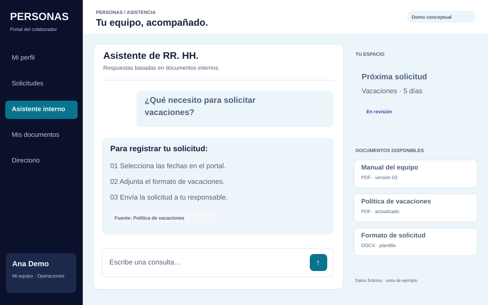
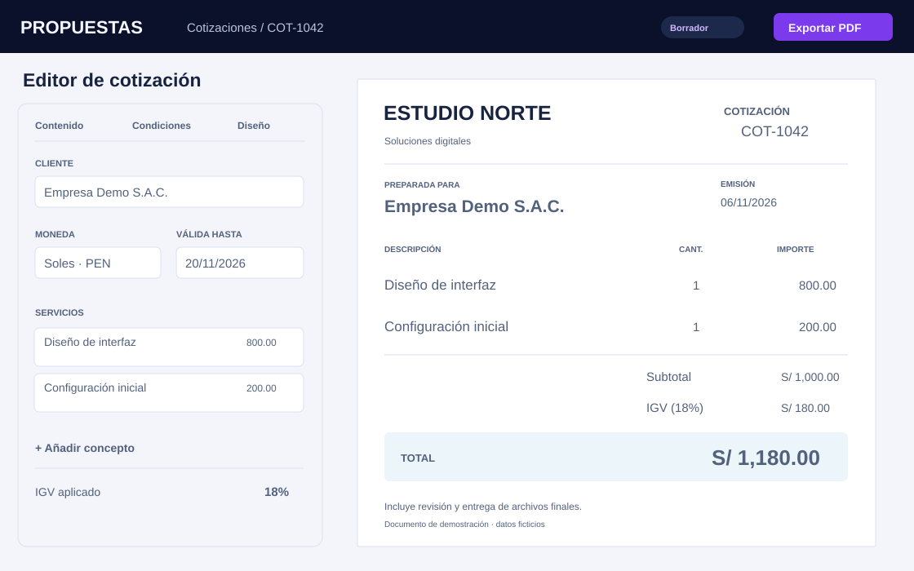
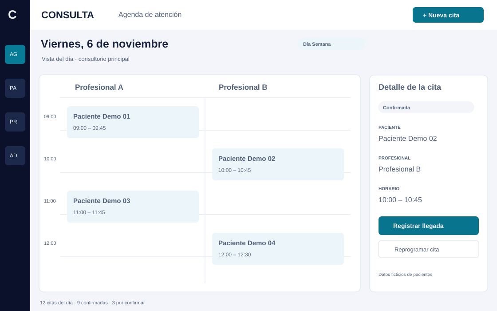
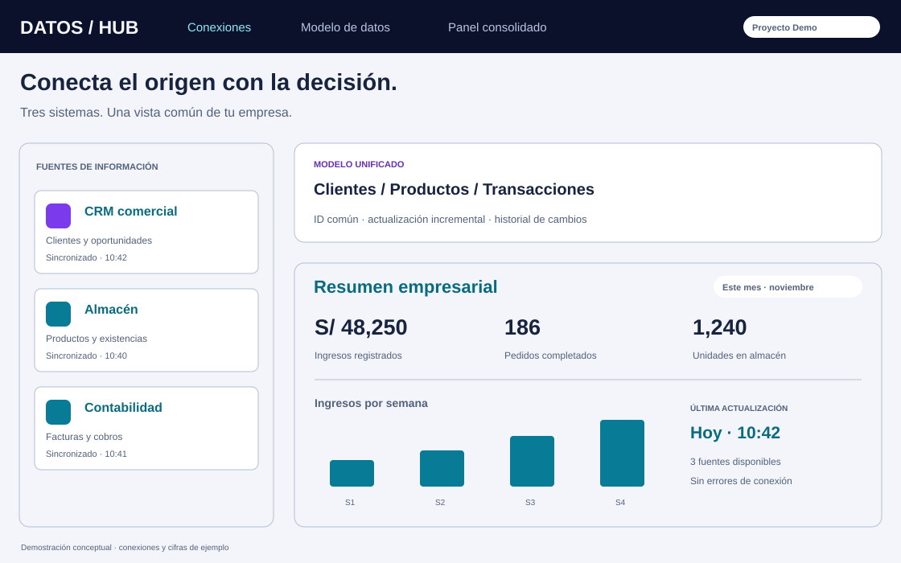

IA empresarial
Asistentes que aplican la IA a tareas concretas.


HablemosCreamos software, IA y automatizaciones para hacer avanzar tu negocio.
Demostraciones de producto.
Asistentes que aplican la IA a tareas concretas.

Flujos que conectan tareas y mantienen tu negocio en movimiento.

Sistemas diseñados para la forma en que trabaja tu equipo.

Información conectada, confiable y lista para usar.

Estrategia para conectar tu negocio con sus clientes.
Visión técnica para dar forma a tu proyecto.
Desarrollo con atención a cada detalle de tu proyecto.
De la primera conversación
al soporte continuo.
Entendemos tus necesidades, retos y objetivos.
Alineamos ideas, requerimientos y alcance del proyecto.
Visualizamos y revisamos la solución antes de desarrollarla.
Construimos tu solución con calidad y atención al detalle.
Validamos funcionalidad, rendimiento y seguridad.
Te entregamos el producto listo para usar.
Te acompañamos a largo plazo para que tu solución siga funcionando y evolucionando.
Cuéntanos tu idea.
Le damos forma contigo.